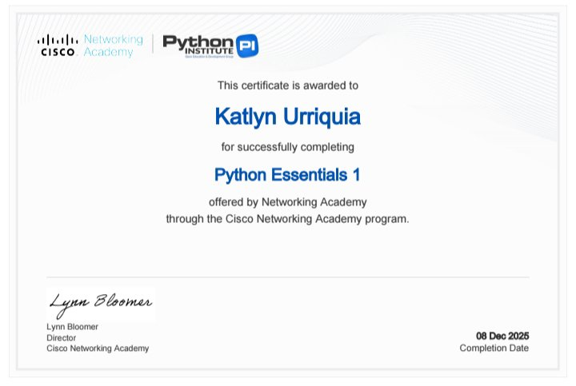
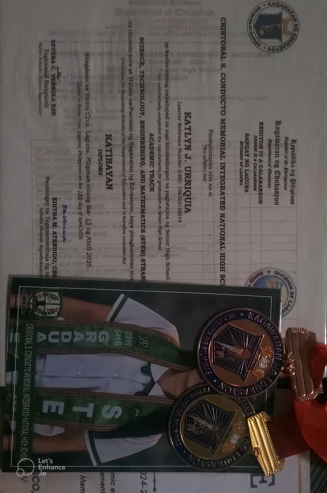
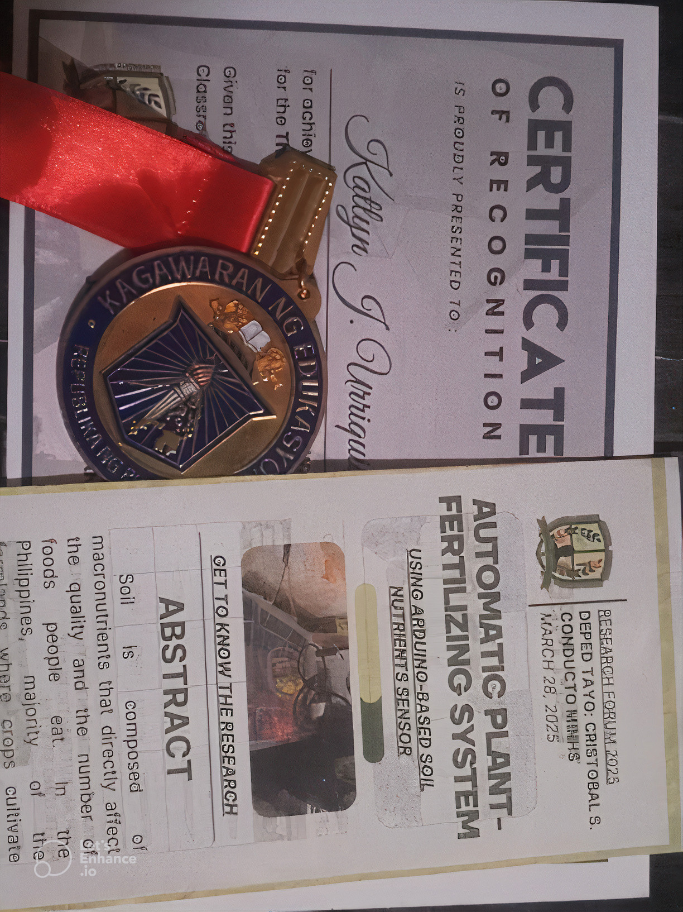

Get to know me
Welcome to my website. My name is Katlyn Urriquia. I am 18 years old and I live in Rizal, Laguna. I am a first-year student at Laguna State Polytechnic University, taking the Bachelor of Science in Information Technology (BSIT). My interest in computers started when I was in senior high school. Our research project involved using Arduino, which required basic programming and hardware setup. Through this project, I learned how code is used to control devices and make them work properly. I also watched many videos on social media about programming, website development, and new technology. These experiences made me more curious and helped me understand how systems and applications work, which motivated me to learn more about information technology. As I learned more about computer, I realized that IT is a field where I can be creative and solve problems. This encouraged me to choose BSIT as my course and pursue it as a career. This is the first website I developed. I created it to practice my skills and apply what I have learned so far. Through this website, I want to show my progress and continue improving my knowledge in coding, web development, and other areas of information technology.
Gallery
Projects
Automatic Plant Fertilizing System Using Arduino-Based Soild Nutrient Sensor
View ProjectPersonal Website
View ProjectAwards and Certification
Certification 1

Certification 2
Academic achiever

Best in Research
